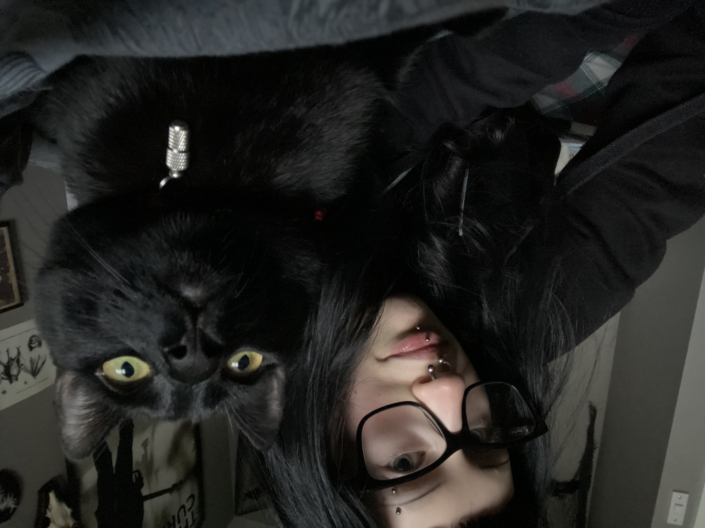
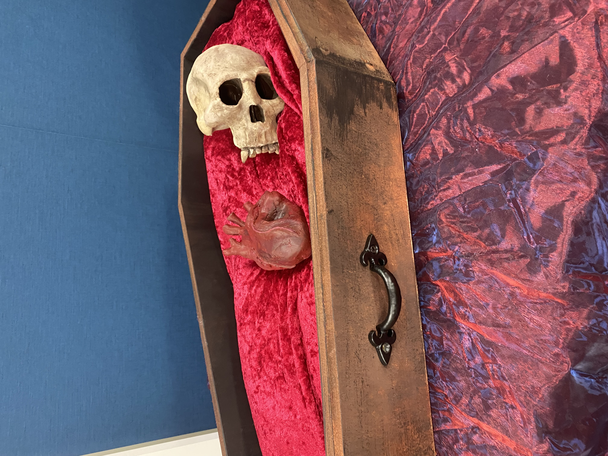

Meet the Artist
Faye Thomas
I am Faye, a gothic‑focused illustrator whose work blends horror, anatomy, and expressive blackwork.
My style is shaped by classic horror cinema, anatomical studies, folklore, and a lifelong fascination with dark visual storytelling.

College Horror Exhibition
During my studies, I have created a horror‑themed anatomical installation featuring a skull and heart displayed inside a velvet‑lined coffin.
This piece explored themes of mortality, symbolism, and theatrical horror presentation.

Artistic Focus
My work centres on intention, atmosphere, and emotional storytelling.
I aim to create pieces that feel personal, symbolic, and alive — whether portraits, creatures, or anatomical studies.
Future Direction
My long‑term goal is to bring my gothic style into tattooing, combining illustration with craft, discipline, and connection.
I am actively seeking apprenticeship opportunities to grow professionally.